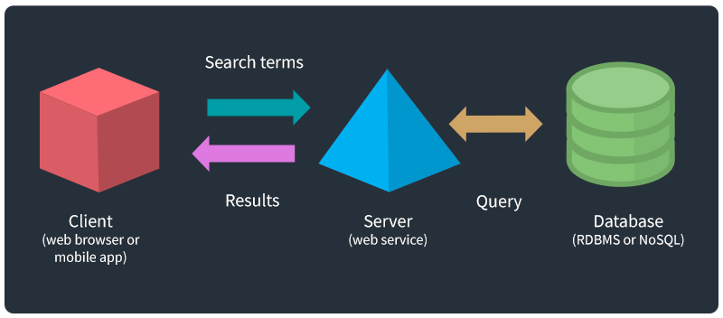

APIs
An introduction to APIs
Contents
- Introduction, Required tools
- About APIs
- APIs are like search engines
- Make an API request
- Test an API in the browser
- National Weather Service API
- API authentication
- Why are most APIs free?
- Use Postman to test APIs
- Keep practicing, References
Introduction
Review the following sections and perform the activities on your own or with your group.
Perform the task(s) when you see this 👉 emoji
Learning Objectives
Students who complete the following will be able to:
- Define essential API terms such as authentication, request, response, client, and server
- List methods for connecting to APIs
- Explain why some APIs require authentication
- Use different clients to access data from the National Weather Service and other APIs
Preparation
Complete the following to prepare for this module
Required tools
👉 Install these tools now to use them later in this presentation
- JSON Viewer browser extension
- Create a Postman Account and install their client
Application Program Interface
An API is a software service that provides data or functionality, usually to other software.
- A Client (web page, mobile or desktop app) makes a request
- The Server processes the request, queries a database if needed
- Server sends response, and client does something with the data
API examples
Any time you access the internet or use a mobile app, you're using an API.
- Google Fonts API provides custom typefaces for websites through a free web service
- Leaflet uses tiles from OpenStreetMap API to display interactive maps and data
- Social media apps (Twitter, Instagram, etc.) use APIs to retrieve and upload data
*While "API" can also refer to a specification, or how a standard is exposed, this presentation discusses web services.
APIs are like search engines
When using an API for data, the process is essentially the same
- Using a browser (client), you enter terms and click search in a UI to make a request
- The server processes your request, queries their database
- And returns a response (HTML of results), which the browser renders as a page.
The key difference between "interfaces" they provide
- A search engine interface makes data usable for humans in a GUI
- APIs provide an interface to machine-readable data for programs.
Make an API request
The method you use to send an API request depends on your context. For testing:
- Use a web browser
- Use an API-testing client like Postman
- Use
wgetorcurlon a command line
If you are coding an application:
- API creators often publish SDKs (development kits) to simplify requests
- Most languages have built-in code for asynchronous requests, like Javascript's
$.ajax()orfetch()
Test an API in the browser
Any web browser can send a request to a public API via it's endpoint (the URL that provides specific data or functionality).
This National Weather Service (NWS) API endpoint returns JSON data about its status: (click to view) 👉 https://api.weather.gov/
{
"status": "OK"
}
If you installed JSON Viewer then it will display formatted data like above.
Of common software-independent, machine readable data exchange formats, JSON is most popular (over XML) because it is lightweight and easy to use with Javascript.
National Weather Service API
Their documentation says to get a forecast, we send a request with our current (decimal) latitude and longitude to the /points endpoint, formatted like:
https://api.weather.gov/points/{latitude},{longitude}
For Davidson College we use 👉 https://api.weather.gov/points/35.499302,-80.848686
The response includes several data points, like our grid office gsp and position 116,76
"forecast": "https://api.weather.gov/gridpoints/GSP/116,76/forecast",
"forecastHourly": "https://api.weather.gov/gridpoints/GSP/116,76/forecast/hourly",
National Weather Service API
Using the /gridpoints endpoint we can send a new request to get the forecast
👉 https://api.weather.gov/gridpoints/GSP/116,76/forecast
"periods": [{
"name": "Today",
"temperature": 78,
"icon": "https://api.weather.gov/icons/land/day/sct?size=medium",
"shortForecast": "Mostly Sunny",
},{
"name": "Tonight",
"temperature": 62,
"icon": "https://api.weather.gov/icons/land/night/rain_showers,20?size=medium",
"shortForecast": "Slight Chance Rain Showers",
}]
The response includes the time, temperature, conditions, and links to icons:
API authentication
- The first example used free, open data from the U.S. government, but many APIs require authentication, which means you need to create an account and make requests with a special key to verify your identity.
- API creators use authentication to prevent abuse. If you make too many requests your key may temporarily stop working (the NWS rate limit = 5 seconds).
- It is essential to read an API's documentation to learn how to use their endpoints, and other requirements.
Why are most APIs free?
Companies build APIs for various reasons:
- To allow access to data and software used by employees in a company
- To provide data and functions for their public mobile apps
- To encourage developers to build 3rd party apps that drive users and engagement
- Free access to services makes other companies to increase dependency
Why are most APIs free?
- The Instagram app is just another type of client.
- It relies on their API to collect your data and render information and media in an interface.
- Like many other companies, they give free, but limited access to their users' data to 3rd party developers in order to drive engagement.
Use Postman to test APIs
Postman is an API development client. Once you install the app and login:
👉 Create a new GET request with this URL and click Send
https://jsonplaceholder.typicode.com/users
You will see Status: 200 OK and a collection of "users" if your request was successful.
*JSON Placeholder is a free fake API for testing
URL anatomy
The parts of this URL https://jsonplaceholder.typicode.com/users
- HTTPS (Hypertext Transfer Protocol Secure) - enables secure (encrypted) communication over a computer network
- jsonplaceholder.typicode.com - the API host
- /users - the endpoint
Request methods are standards for exchanging data between clients and servers:
- GET - requests data, parameters are included in the URL so can be bookmarked https://www.google.com/search?q=cats
- POST - sends data in the HTTP message body so has no length restrictions
👉 API Practice
Continue exploring APIs with a browser or Postman using the following No Auth APIs.
- Bored API - Get a new random /activity
- Random User Generator - /api
- IP Geolocation API - Data about your present location /json
- faker.hook.io uses faker.js - name.findName&locale=de, hacker.phrase, companyName (see list)
👉 API Practice
API collections to explore. If authentication is required you need to register with them first.
- No Auth APIs - Big List of Free and Open Public APIs (No Auth Needed)
- Public APIs - A collective list of free APIs for use in software and web development
- apilist.fun - A collective list of APIs
- Data / Functionality API Resource List - My own list
Digital Public Library of America (DPLA)
- Fetch data about items in dp.la collection
- docs - free | auth: 🔑 required
- /items =
http://api.dp.la/v2/items?q=kittens&api_key=API_KEY - Used by - Historical GIFs (code) | Term vs Term
"creator": ["Jones, Leslie, 1886-1967"],
"title": ["Kittens"],
"subject": [
{"name": "Cats"},
{"name": "Baby animals"}
],
"format": [
"Photographs",
"Glass negatives"
],
Wikipedia
- Retrieve articles and metadata from wikipedia.org
- docs - free | auth: no / yes (🔑 for bots)
- /query =
https://en.wikipedia.org/w/api.php?format=json&action=query&titles=cat&prop=revisions&rvprop=content - Used by - Wikiscanner (2002-07)
"title": "Cat",
"revisions": [{
"contentformat": "text/x-wiki",
"contentmodel": "wikitext",
"*": "{{Short description|Domesticated felid species}}
{{About|the species that is commonly kept as a pet|the cat family|Felidae|other
uses|Cat (disambiguation)|and|Cats (disambiguation)}}"
}]
...
OpenSecrets
- Retrieve data about money in politics from opensecrets.org
- docs - free | auth: 🔑 required | non-commercial only | limit: 200/day
- /getLegislators =
https://www.opensecrets.org/api/?method=getLegislators&id=WV&apikey=API_KEY - /candIndByInd 📄 =
https://www.opensecrets.org/api/?method=candIndByInd&output=json&cid=N00032838&cycle=2018&ind=E1210&apikey=API_KEY🤨
{ "response":{
"cand_name":"Manchin, Joe", "cid":"N00032838", "cycle":"2018",
"industry":"Coal mining", "chamber":"S", "party":"D", "state":"West Virginia",
"total":"40550", "indivs":"29050", "pacs":"11500", "rank":"6",
"origin":"Center for Responsive Politics", "source": "...", "last_updated":"06\/10\/19"
}
}
Spotify
- Retrieve metadata about music artists, albums, and tracks using Spotify Web API endpoints.
- docs - free | auth: yes 🔑 - make an app, then get token with appropriate permissions
- /me =
https://api.spotify.com/v1/me - /me/top/artists =
https://api.spotify.com/v1/me/top/artists
- Login to the developer dashboard and create an app
- Test the
/meendpoint in their Console. Click Get Token and select all required scopes. - Click Try It to make a request or copy your token and the endpoint you wish to test into Postman.
Authentication with Postman
To reuse a token across multiple (e.g. Spotify) requests in Postman:
- Create a collection named Spotify
- In the Spotify collection
- In Variables - Add a new variable named
token. Paste the token in value (use select all!). - In Authorization - Set Type to OAuth2.0 and then reference the variable with
{{token}}
- In Variables - Add a new variable named
- In Authorization for each request, choose "inherit from parent" to use the token
Note: APIs are not always perfect. For example, the /me/top/{type} endpoint is not documented well. You have to enter values for ALL parameters to make it work.
Keep practicing
- Learn Computing: Data Basics slides | markdown
- Learn Computing: Data Types slides | markdown
- Learn Computing: Data Cleaning slides | markdown
- Learn Computing: APIs slides | markdown
Notes
- APIs are always changing - Before Facebook (and Instagram) added restrictions to their APIs anyone (artists, researchers, anti-press governments) could download entire databases. Thanks to various cultural works and activism this has changed (see iknowwhereyourcatlives.com, givememydata.com).
- If you are building an interface or processing the data, save the API result in a local .json file and point to that URL so you don't exceed the API rate limit when testing,